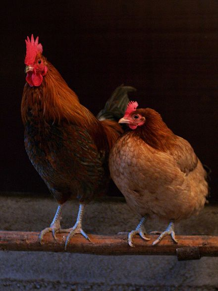

For the culinary use of chickens, see Chicken as food. For other uses, see Chicken (disambiguation) and Chooks (disambiguation). "Cockadoodledoo" and "Cocka-doodle-doo" redirect here. For the nursery rhyme, see Cock a doodle doo.
The chicken (Gallus gallus domesticus), a subspecies of the red junglefowl, is a type of domesticated fowl, originally from Southeastern Asia. Rooster or cock is a term for an adult male bird, and younger male may be called a cockerel. A male that has been castrated is a capon. The adult female bird is called a hen and a sexually immature female is called a pullet.
Originally raised for cockfighting or for special ceremonies, chickens were not kept for food until the Hellenistic period (4th–2nd centuries BCE). Humans now keep chickens primarily as a source of food (consuming both their meat and eggs) and as pets.
An adult male is a called a cock or rooster (in the United States) and an adult female is called a hen.
According to Merriam-Webster, the term "rooster" (i.e. a roosting bird) originated in the mid- or late 18th century as a euphemism to avoid the sexual connotation of the original English "cock", and is widely used throughout North America. "Roosting" is the action of perching aloft to sleep at night, which is done by both sexes.
Chickens are omnivores. In the wild, they often scratch at the soil to search for seeds, insects and even animals as large as lizards, small snakes, or young mice.
Chickens are gregarious birds and live together in flocks. They have a communal approach to the incubation of eggs and raising of young. Individual chickens in a flock will dominate others, establishing a "pecking order", with dominant individuals having priority for food access and nesting locations. Removing hens or roosters from a flock causes a temporary disruption to this social order until a new pecking order is established. Adding hens, especially younger birds, to an existing flock can lead to fighting and injury. When a rooster finds food, he may call other chickens to eat first. He does this by clucking in a high pitch as well as picking up and dropping the food. This behaviour may also be observed in mother hens to call their chicks and encourage them to eat.